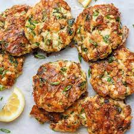

Chiken Fritters

Description
These Cheesy Chicken Fritters are a surprising way to use chicken breast, but it really works. These fritters are tender, juicy and so flavorful.
If you love easy chicken recipes, THESE chicken patties are for you!
- 1 1/2 lbs chicken breasts, (3 large)
- 2 large egg
- 1/3 cup mayonnaise
- 1/3 cup flour
- 4 oz mozzarella cheese
- 1 1/2 Tbsp chopped fresh dill
- 1/2 tsp salt
- 1/8 tsp black pepper
- 2 Tbsp Extra light olive oil